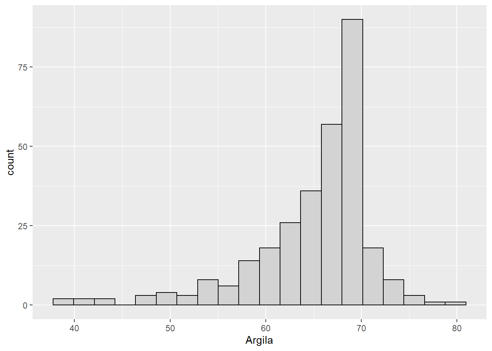
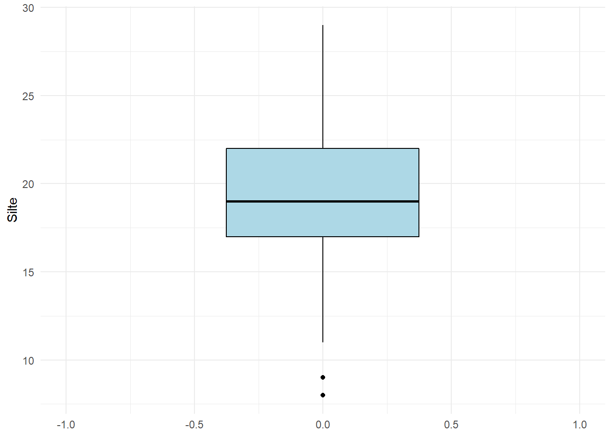
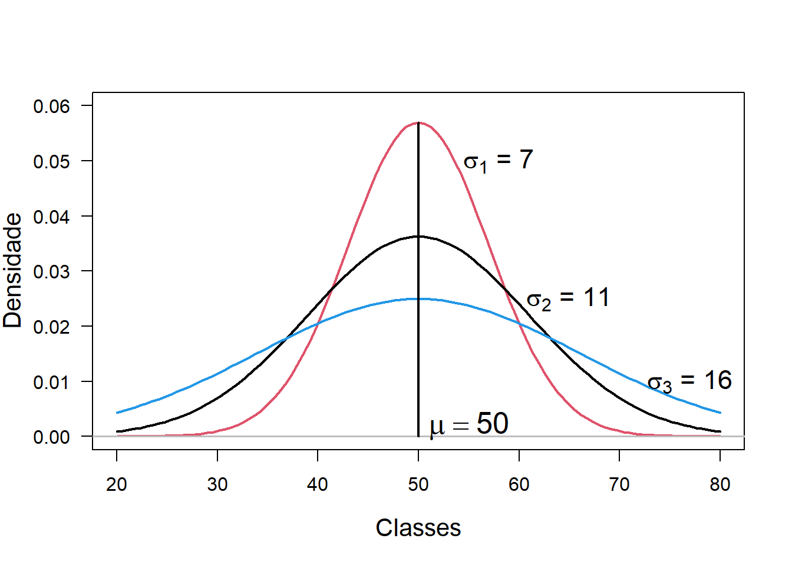
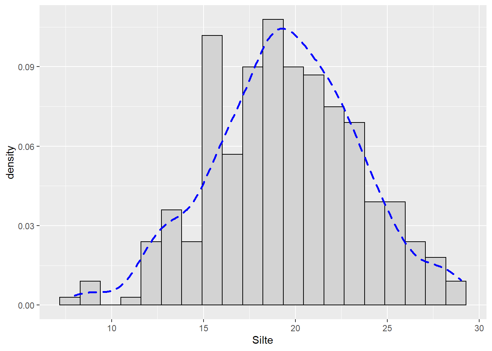
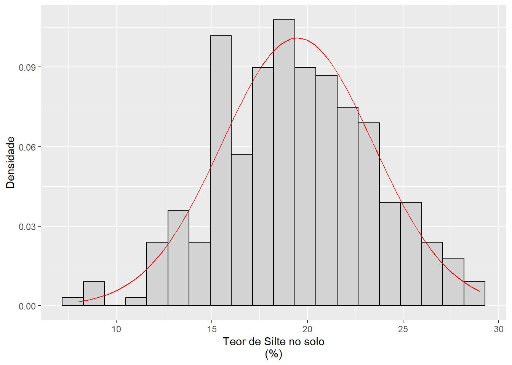
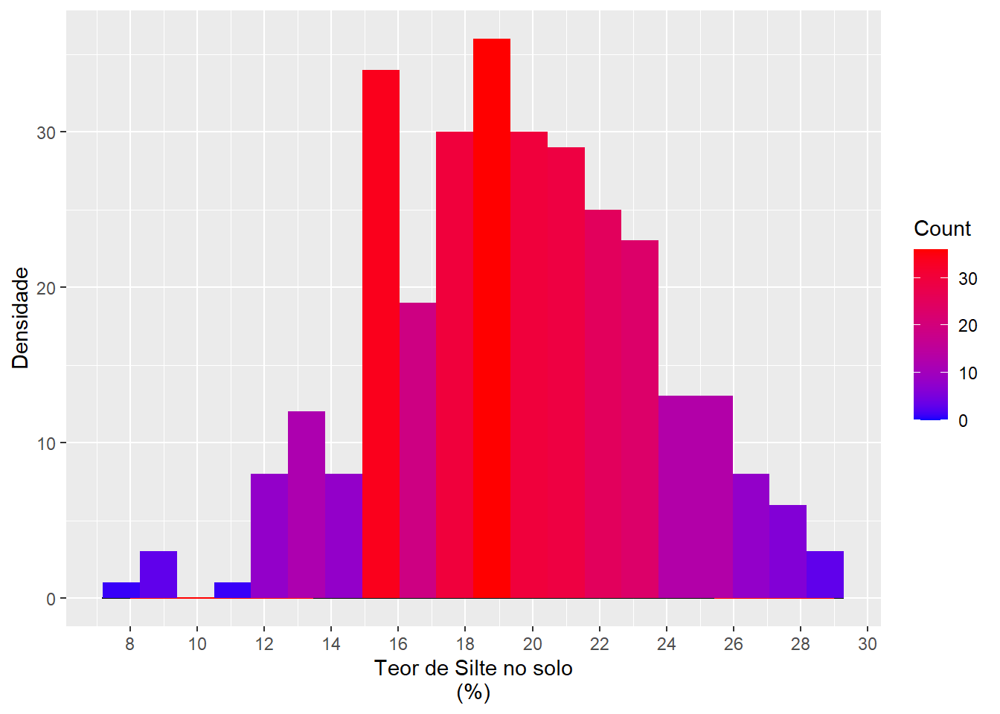

10 Análise Exploratória de Dados (AED)
A AED não é um processo com um conjunto de regras rígidas. Mais do que qualquer coisa, é uma estado de espírito. Durante as fazes iniciais de AED, devemos ser livres para investigar cada ideia que ocorra.
À medida que a exploração segue, nos direcionamos para algumas áreas particularmente produtivas que, por fim, deverão ser escritas e comunicadas.
É considera uma fase importante de qualquer análise, pois mesmo se as perguntas já foram formuladas, sempre será necessário pesquisar a qualidade dos dados que temos em mãos.
Assim, a limpeza de dados é apenas uma aplicação da AED, na qual serão necessárias as ferramentas de visualização, transformação e modelagem.
A AED é o cálculo das estatísticas tradicionais, alguns exemplos:
Univariadas: média, mediana, desvio padrão, 1º e 3º quartis, mínimo, máximo, coeficientes die variação, de assimetria e curtosis, histogramas, boxplot, gráficos de regressão, gráficos de dispersão, entre outros.
Bivariadas – análise de
cluster, análise de componentes principais, análise de fatores e análise de variância.
10.1 Algumas funções de resumo
Aliadas à média e à contagem, várias outras funções podem ser utilizadas em R.
Medidas de localização
A função median() retorna a mediana do conjunto de dados, ou seja, um valor onde \(50\%\) de \(x\) está acima e \(50\%\) está abaixo dela. Já a média mean() é a soma dividida pelo comprimento. Assim, a mediana não é influenciada por valores extremos, diferente da média. Compare a diferença entre média e mediana para as variáveis ARGILA e em seguida P.
$$
Entrada de dados
library(tidyverse)
URL <- "https://raw.githubusercontent.com/arpanosso/r_data_science_fcav/master/dados/geomorfologia.txt"
geomorfologia<-read.table(URL,header = TRUE)ARGILA
# Para Argila
geomorfologia %>%
group_by(SUP) %>%
summarize(Media = mean(ARGILA, na.rm = TRUE),
Mediana = median(ARGILA, na.rm = TRUE))## # A tibble: 3 x 3
## SUP Media Mediana
## <chr> <dbl> <dbl>
## 1 I 21.1 20.7
## 2 II 14.8 14.3
## 3 III 10.1 10.1geomorfologia %>%
ggplot(aes(x=ARGILA,fill=SUP)) +
geom_histogram(bins=15,color="black")+
facet_wrap(~SUP,scales="free")
Fósforo (P)
# Para P
geomorfologia %>%
group_by(SUP) %>%
summarize(Media = mean(P, na.rm = TRUE),
Mediana = median(P, na.rm = TRUE))## # A tibble: 3 x 3
## SUP Media Mediana
## <chr> <dbl> <dbl>
## 1 I 17.8 12
## 2 II 34.9 12.5
## 3 III 14.0 9geomorfologia %>%
ggplot(aes(x=P,fill=SUP)) +
geom_histogram(bins=15,color="black")+
facet_wrap(~SUP,scales="free")
Medidas de dispersão
O desvio padrão sd() é a medida de dispersão padrão. Outras medidas podem ser utilizadas, como a variação interquartil IQR() e o desvio absoluto médio mad() são equivalentes robustos que podem ser mais úteis se você tiver outliers.
# Para P
geomorfologia %>%
group_by(SUP) %>%
summarize(Media = mean(P, na.rm = TRUE),
Mediana = median(P, na.rm = TRUE),
DP=sd(P, na.rm = TRUE),
IQR=IQR(P, na.rm = TRUE),
DA_mediano = mad(P, na.rm = TRUE))## # A tibble: 3 x 6
## SUP Media Mediana DP IQR DA_mediano
## <chr> <dbl> <dbl> <dbl> <dbl> <dbl>
## 1 I 17.8 12 13.2 19 11.9
## 2 II 34.9 12.5 47.5 39.5 15.6
## 3 III 14.0 9 14.7 10 7.41Medidas de classificação
São os valores mínimo/máximo e os quantis. Quantis são generalizações da mediana. Por exemplo, quantile(x, 0.25) encontrará o valor de x que é maior que \(25\%\) dos valores e menor do que os \(75\%\) restantes. Já quantile(x, 0.75) encontrará o valor de x que é maior que \(75\%\) dos valores e menor do que os \(25\%\) restantes.
# Para P
geomorfologia %>%
group_by(SUP) %>%
summarize(Media = mean(P, na.rm = TRUE),
Mediana = median(P, na.rm = TRUE),
DP=sd(P, na.rm = TRUE),
IQR=IQR(P, na.rm = TRUE),
DA_mediano = mad(P, na.rm = TRUE),
Mínimo = min(P, na.rm = TRUE),
Q1 = quantile(P, 0.25, na.rm = TRUE),
Q3 = quantile(P, 0.75, na.rm = TRUE),
Máximo = max(P, na.rm = TRUE)) ## # A tibble: 3 x 10
## SUP Media Mediana DP IQR DA_mediano Mínimo Q1 Q3 Máximo
## <chr> <dbl> <dbl> <dbl> <dbl> <dbl> <dbl> <dbl> <dbl> <dbl>
## 1 I 17.8 12 13.2 19 11.9 4 6 25 42
## 2 II 34.9 12.5 47.5 39.5 15.6 2 4 43.5 209
## 3 III 14.0 9 14.7 10 7.41 3 4 14 56Contagens
Vamos agora contar o número de observações e o número de valores não faltantes, utilizando as funções n() e sum(!is.na(x)):
# Para P
geomorfologia %>%
group_by(SUP) %>%
summarize(Media = mean(P, na.rm = TRUE),
Mediana = median(P, na.rm = TRUE),
DP=sd(P, na.rm = TRUE),
IQR=IQR(P, na.rm = TRUE),
DA_mediano = mad(P, na.rm = TRUE),
Mínimo = min(P, na.rm = TRUE),
Q1 = quantile(P, 0.25, na.rm = TRUE),
Q3 = quantile(P, 0.75, na.rm = TRUE),
Máximo = max(P, na.rm = TRUE),
N=n(),
N_na = sum(!is.na(P))) ## # A tibble: 3 x 12
## SUP Media Mediana DP IQR DA_mediano Mínimo Q1 Q3 Máximo N
## <chr> <dbl> <dbl> <dbl> <dbl> <dbl> <dbl> <dbl> <dbl> <dbl> <int>
## 1 I 17.8 12 13.2 19 11.9 4 6 25 42 17
## 2 II 34.9 12.5 47.5 39.5 15.6 2 4 43.5 209 62
## 3 III 14.0 9 14.7 10 7.41 3 4 14 56 27
## # ... with 1 more variable: N_na <int>Contagens e proporções de valores lógicos sum(x > 10), mean(y == 0). Quando usado com funções numéricas, TRUE é convertido em \(1\), e FALSE em \(0\). Isso torna sum() e mean() muito úteis: sum(x) retorna o número de TRUE em x e mean(x) retorna a proporção de valores verdadeiros.
Por exemplo, em cada supefície geomórfica, vamos calcular o número e a proporção de valores de tor de fósforo disponível no solo (P) inferiores a 10 \(mg /dm^3\).
# Para P
geomorfologia %>%
group_by(SUP) %>%
summarize(Media = mean(P, na.rm = TRUE),
Mediana = median(P, na.rm = TRUE),
DP=sd(P, na.rm = TRUE),
IQR=IQR(P, na.rm = TRUE),
DA_mediano = mad(P, na.rm = TRUE),
Mínimo = min(P, na.rm = TRUE),
Q1 = quantile(P, 0.25, na.rm = TRUE),
Q3 = quantile(P, 0.75, na.rm = TRUE),
Máximo = max(P, na.rm = TRUE),
N=n(),
N_na = sum(!is.na(P)),
n10=sum(P<10),
n10p=mean(P<10)) ## # A tibble: 3 x 14
## SUP Media Mediana DP IQR DA_mediano Mínimo Q1 Q3 Máximo N
## <chr> <dbl> <dbl> <dbl> <dbl> <dbl> <dbl> <dbl> <dbl> <dbl> <int>
## 1 I 17.8 12 13.2 19 11.9 4 6 25 42 17
## 2 II 34.9 12.5 47.5 39.5 15.6 2 4 43.5 209 62
## 3 III 14.0 9 14.7 10 7.41 3 4 14 56 27
## # ... with 3 more variables: N_na <int>, n10 <int>, n10p <dbl>Medidas da Forma da Distribuição
As medidas da forma da distribuição são os coeficientes de assimetria e curtose.
Assimetria - é uma medida da simetria da distribuição de frequência. Ela mostra se os desvios da média são maiores para um lado da distribuição do que para o outro. Usualmente, a estimativa do Coeficiente de Assimetria pode ser calculada pela fórmula:
\[ G_1 = \frac{n}{(n-1)(n-2)} \cdot \frac{\sum_{i=1}^n(x_i - \bar{x})^3}{s^3} \]
Vamos utilizar a função skewness() do pacote agricolae para calcular o coeficente de assimetria.
# Para P
geomorfologia %>%
group_by(SUP) %>%
summarize(Media = mean(P, na.rm = TRUE),
Mediana = median(P, na.rm = TRUE),
DP=sd(P, na.rm = TRUE),
IQR=IQR(P, na.rm = TRUE),
DA_mediano = mad(P, na.rm = TRUE),
Mínimo = min(P, na.rm = TRUE),
Q1 = quantile(P, 0.25, na.rm = TRUE),
Q3 = quantile(P, 0.75, na.rm = TRUE),
Máximo = max(P, na.rm = TRUE),
N=n(),
N_na = sum(!is.na(P)),
n10=sum(P<10),
n10p=mean(P<10),
G1 = agricolae::skewness(P)) ## # A tibble: 3 x 15
## SUP Media Mediana DP IQR DA_mediano Mínimo Q1 Q3 Máximo N
## <chr> <dbl> <dbl> <dbl> <dbl> <dbl> <dbl> <dbl> <dbl> <dbl> <int>
## 1 I 17.8 12 13.2 19 11.9 4 6 25 42 17
## 2 II 34.9 12.5 47.5 39.5 15.6 2 4 43.5 209 62
## 3 III 14.0 9 14.7 10 7.41 3 4 14 56 27
## # ... with 4 more variables: N_na <int>, n10 <int>, n10p <dbl>, G1 <dbl>Se as observações apresentam distribuição simétrica temos \(G_1=0\), ou próximas a \(0\).
O coeficiente de assimetria é o indicativo mais comum de Normalidade. Em dados assimétricos, existem dúvidas sobre qual medida de tendência central devemos utilizar para resumir os dados. Nesses casos, comparações entre médias de diferentes conjuntos de observações são não confiáveis, uma vez que a variância pode diferir substancialmente de um conjunto de observações para outro.
geomorfologia %>%
ggplot(aes(x=P,y=..density..)) +
geom_histogram(bins=30, color="black", fill="white")+
facet_wrap(~SUP, scales = "free")+
geom_density(alpha=0.1,fill="red")
Curtose - Indica o grau de achatamento de uma distribuição, é a medida do peso das caudas da distribuição. Se as observações seguem uma distribuição normal, então o coeficiente de curtose é zero, e sua estimativa é dado por:
\[ G_2 = \frac{\frac{\sum{i=1}^n(x-\bar{x})^4}{s^4}}{(n-3)(n-2)(n-1)}-3 \cdot \frac{(n-1)^2}{(n-2)(n-3)} \]
Vamos utilizar a função kurtosis() do pacote agricolae para calcular o coeficente de curtose.
# Para P
geomorfologia %>%
group_by(SUP) %>%
summarize(Media = mean(P, na.rm = TRUE),
Mediana = median(P, na.rm = TRUE),
DP=sd(P, na.rm = TRUE),
IQR=IQR(P, na.rm = TRUE),
DA_mediano = mad(P, na.rm = TRUE),
Mínimo = min(P, na.rm = TRUE),
Q1 = quantile(P, 0.25, na.rm = TRUE),
Q3 = quantile(P, 0.75, na.rm = TRUE),
Máximo = max(P, na.rm = TRUE),
N=n(),
N_na = sum(!is.na(P)),
n10=sum(P<10),
n10p=mean(P<10),
G1 = agricolae::skewness(P),
G2 = agricolae::kurtosis(P)) ## # A tibble: 3 x 16
## SUP Media Mediana DP IQR DA_mediano Mínimo Q1 Q3 Máximo N
## <chr> <dbl> <dbl> <dbl> <dbl> <dbl> <dbl> <dbl> <dbl> <dbl> <int>
## 1 I 17.8 12 13.2 19 11.9 4 6 25 42 17
## 2 II 34.9 12.5 47.5 39.5 15.6 2 4 43.5 209 62
## 3 III 14.0 9 14.7 10 7.41 3 4 14 56 27
## # ... with 5 more variables: N_na <int>, n10 <int>, n10p <dbl>, G1 <dbl>,
## # G2 <dbl>geomorfologia %>%
ggplot(aes(x=P,y=..density..)) +
geom_histogram(bins=30, color="black", fill="white")+
facet_wrap(~SUP, scales = "free")+
geom_density(alpha=0.1,fill="red")
10.2 Descrição gráfica
Visualizar a distribuição de uma variável dependerá se a variável é categórica ou contínua. Uma variável categórica só pode assumir um pequeno conjunto de valores. Em R essas variáveis são geralmente salvas na forma de fatores ou strings.
Importação dos dados
Vamos realizar a importação, via web, do banco de dados transectos.txt.
URL <- "https://raw.githubusercontent.com/arpanosso/r_data_science_fcav/master/dados/transectos.txt"
transectos<-read.table(URL,header = TRUE)
glimpse(transectos)## Rows: 302
## Columns: 7
## $ Amostra <int> 1, 2, 3, 4, 5, 6, 7, 8, 9, 10, 11, 12, 13, 14, 15, 16, 17, 1~
## $ Transecto <chr> "I", "I", "I", "I", "I", "I", "I", "I", "I", "I", "I", "I", ~
## $ X <int> 0, 50, 100, 150, 200, 250, 300, 350, 400, 450, 500, 550, 600~
## $ Y <int> 0, 0, 0, 0, 0, 0, 0, 0, 0, 0, 0, 0, 0, 0, 0, 0, 0, 0, 0, 0, ~
## $ Argila <int> 57, 58, 64, 65, 66, 70, 71, 72, 73, 72, 70, 64, 69, 69, 67, ~
## $ Silte <int> 13, 13, 16, 16, 14, 15, 17, 18, 19, 20, 19, 21, 19, 18, 21, ~
## $ Areia <int> 30, 29, 20, 19, 20, 15, 12, 10, 8, 8, 11, 15, 12, 13, 12, 12~As colunas X e Y denotam as coordenadas de cada ponto amostral dentro do gradeado experimental. Vamos vizualizar o gradeado.
transectos %>%
ggplot(aes(x=X, y=Y))+
geom_point(size=2)+
theme_minimal()glimpse(transectos)## Rows: 302
## Columns: 7
## $ Amostra <int> 1, 2, 3, 4, 5, 6, 7, 8, 9, 10, 11, 12, 13, 14, 15, 16, 17, 1~
## $ Transecto <chr> "I", "I", "I", "I", "I", "I", "I", "I", "I", "I", "I", "I", ~
## $ X <int> 0, 50, 100, 150, 200, 250, 300, 350, 400, 450, 500, 550, 600~
## $ Y <int> 0, 0, 0, 0, 0, 0, 0, 0, 0, 0, 0, 0, 0, 0, 0, 0, 0, 0, 0, 0, ~
## $ Argila <int> 57, 58, 64, 65, 66, 70, 71, 72, 73, 72, 70, 64, 69, 69, 67, ~
## $ Silte <int> 13, 13, 16, 16, 14, 15, 17, 18, 19, 20, 19, 21, 19, 18, 21, ~
## $ Areia <int> 30, 29, 20, 19, 20, 15, 12, 10, 8, 8, 11, 15, 12, 13, 12, 12~Agora, vamos criar um gráfico de barras para visualizar a variável categórica Transecto, ou seja, o número de observações em cada transecto.
transectos %>%
ggplot(aes(x = Transecto))+
geom_bar(fill="lightblue", color="black")
Muitas vezes precisamos modificar a escala dos eixos para melhorar e focar nossa visualização nas diferenças, então, vamos utilizar a função coord_cartesian(), aliada aos argumentos xmin e/ou ymin, ambos os argumentos deverãp receber um vetor com dois valores para a definição do menor e maior valor da escala:
transectos %>%
ggplot(aes(x = Transecto))+
geom_bar(fill="lightblue",color="black") +
coord_cartesian(ylim= c(55,63))
Agora vamos visualizar a tabela com os valores contados.
transectos %>%
count(Transecto)## Transecto n
## 1 I 58
## 2 II 61
## 3 III 63
## 4 IV 62
## 5 V 58Uma variável contínua pode assumir qualquer valor de um conjunto infinito de valores ordenados. Para examinarmos a distribuição de uma variável contínua, vamos utilizar o histograma.
Argila
transectos %>%
ggplot(aes(x=Argila)) +
geom_histogram(bins=20, color="black",fill="lightgray")
Podemos sobrepor vários histogramas no mesmo gráfico, para isso, utilize geom_freqpoly(). Observe que vamos criar os polígonos a partir da densidade e frequência \(d_i\):
\[ d_i = \frac{f_i}{\Delta_i} \]
onde,
\(f_i\) é a frequência relativa dada pela contagem de cada classe individual \(n_i\), dividida pelo número total de observações (\(n\)).
\[ f_i = \frac{n_i}{n} \]
\(\Delta_i\) é o intervalo de cada classe específica \(i\).
transectos %>%
ggplot(aes(x=Argila, color=Transecto, y= ..density..)) +
geom_freqpoly()## `stat_bin()` using `bins = 30`. Pick better value with `binwidth`.
O histograma fornece informação sobre:
* Tipo de distribuição;
* Unimodal ou multimodal;
* Presença de valores extremos (outliers);
* Variabilidade.
Outra possibilidade é o uso do Boxplot, para isso vamos verificar a variável Silte:
transectos %>%
ggplot(aes(y=Silte)) +
geom_boxplot()
Vamos modificar o gráfico, alterando as cores e a escala do eixo X para modificar a caixa.
transectos %>%
ggplot(aes(y=Silte)) +
geom_boxplot(color="black",fill="lightblue")+
coord_cartesian(xlim=c(-1,1))+
theme_minimal()
Podemos construir o boxplot segmentado por transecto.
transectos %>%
ggplot(aes(y=Silte, x=Transecto, fill=Transecto)) +
geom_boxplot()
Para facilitar a visualização da tendência, pode-se reordenar Transecto com base no valor médio da variável estudada (teor de silte do solo, no caso).
transectos %>%
ggplot(aes(y=Silte, x=reorder(Transecto,Silte,mean), fill=Transecto)) +
geom_boxplot()
Se temos nomes longos, podemos rotacionar o gráfico 90º com coord_flip().
transectos %>%
ggplot(aes(y=Silte,
x=reorder(Transecto, Silte, mean),
fill=Transecto)) +
geom_boxplot()+
coord_flip()
Violin plot
O violin plot é um método de visualizar dados numéricos. É semelhante ao boxplot, com a adição de um gráfico de densidade girado em cada lado. Essa representação, portanto, também mostram a densidade de probabilidade dos dados em valores diferentes.
Normalmente, um gráfico de violino incluirá todos valores que estão no boxplot: um marcador para a mediana dos dados, uma caixa ou marcador indicando o intervalo interquartil e, possivelmente, todos os pontos de amostra, se o número de amostras não for muito alto. A diferença é particularmente útil quando a distribuição de dados é multimodal (mais de um pico). Neste caso, um gráfico de violino mostra a presença de diferentes picos, sua posição e amplitude relativa.
transectos %>%
ggplot(aes(y=Silte,
x=reorder(Transecto, Silte, mean),
fill=Transecto)) +
geom_violin(trim = FALSE)+
stat_summary(fun = median, geom = "point", shape=21, size=3, color="black", fill="gray") +
theme(legend.position="none")
A densidade de distribuição dos pontos pode ser visualizada com a função geom_dotplot() par aa apresentação dos pontos amostrais.
transectos %>%
ggplot(aes(x=Transecto,y=Silte))+
geom_violin(trim = FALSE) +
geom_dotplot(binaxis='y', stackdir='center', dotsize=1)
Muitas vezes, podemos mesclar o boxplot com o violin plot. A largura das caixas do boxplot pode ser controlada com o argumento width.
transectos %>%
ggplot(aes(y=Silte,
x=reorder(Transecto, Silte, mean),
fill=Transecto)) +
geom_violin(trim=FALSE, fill="lightgray")+
geom_boxplot(width=0.1)+
theme_classic()
Função Densidade Acumulada Empírica
A função de distribuição cumulativa empírica (empirical cumulative distribution function - ECDF) fornece uma visualização alternativa da distribuição. Em comparação com outras visualizações que dependem da densidade (como geom_histogram()), o ECDF não requer nenhum parâmetro de ajuste e lida com variáveis contínuas e categóricas.
A desvantagem é que requer mais treinamento para interpretar com precisão e as tarefas visuais subjacentes são um pouco mais desafiadoras.
A função de distribuição acumulada descreve como probabilidades são associadas aos valores ou aos intervalos de valores de uma variável aleatória. Ela representa a probabilidade de uma variável aleatória ser menor ou igual a um valor real \(x\).
\[
F(x) = P(X \le x)
\]
Em R pode ser desenhanda com stat_ecdf()
transectos %>%
ggplot(aes(x=Silte)) +
stat_ecdf(geom = "line") A representação pode ser segmentada por cada categoria da variável categórica.
A representação pode ser segmentada por cada categoria da variável categórica.
transectos %>%
ggplot(aes(x=Silte, color= Transecto)) +
stat_ecdf(geom = "line")
As variáveis Argila, Silte e Areia são expressas em porcentagem, assim, poderíamos colocá-las em um mesmo gráfico e adicionar uma legenda para identificar cada uma delas.
Podemos realizar essa tarefa utilizando a função gather() do pacote tidyr.
Literalmente essa função empilha o banco de dados. Nesse exemplo, vamos criar uma nova variável denominada granulometria que deverá receber repedidamente os nomes das colunas (Areia, Silte e Argila), preservando o valor numérico dessas variáveis que serão empilhados na nova variável valor, como exemlificado na figura abaixo:

Figure 10.1: Exemplo simples do comportamento da função gather().
A função tem como argumentos os nomes das duas novas colunas granulometria e valor, sendo o terceiro argumento um vetor identificando as posições das colunas que deverão ser empilhadas (5:7, no caso).
transectos %>%
gather(granulometria, valor, 5:7) %>%
View()Podemos completar o código acima pedindo a partir do ggplot() o boxplot por granulometria em cada posição de X, por exemplo:
transectos %>%
gather(granulometria, valor, 5:7) %>%
ggplot(aes(y=valor, x=as.factor(X),fill=granulometria)) +
geom_boxplot()+
theme(axis.text.x=element_text(angle=90, hjus=1,size = rel(0.8)))
Ou, podemos pedir para cada transecto Y, no caso:
transectos %>%
gather(granulometria, valor, 5:7) %>%
ggplot(aes(y=valor, x=as.factor(Y),fill=granulometria)) +
geom_boxplot()+
theme(axis.text.x=element_text(angle=90, hjus=1,size = rel(0.8)))
10.3 Aplicação de modelos
Até agora para a análise exploratória dos dados recomendamos o cálculo de vparias medidas de dispersão e posição, e a representação gráfica, que nos auxiliará na interpretação da forma da distribuição dos dados. O próximo passo é adicionarmos um modelo matemático que descreva o comportamento do dados.
Agora vamos aplicar a estimativa da densidade alisa geom_density() ao nosso histograma.
transectos %>%
ggplot(aes(x=Silte,y=..density..)) +
geom_histogram(bins=20, color="black",fill="lightgray") +
geom_density(linetype=2,col="blue", lwd=1)
Hipóteses estatísticas do teste da normalidade dos dados
\[ \begin{cases} H_0: \text{Os dados tem distribuição normal }[X \sim N(\mu,\sigma^2) ]\\ H_1: \text{Os dados não tem distribuição normal} \end{cases} \] Todo teste estatístico fornece os valores da estatística do teste e o valor de probabilidade associado a essa estatística \(p\), por exemplo:
silte <- transectos$Silte
shapiro.test(silte)##
## Shapiro-Wilk normality test
##
## data: silte
## W = 0.98997, p-value = 0.03625Regra de decisão (\(\alpha=0,01\) ou \(1\%\))
*Se o valor de \(p \ge 0,01\), o teste é não significativo, portanto não rejeitamos \(H_0\), e concluímos que os dados suportam a hipótese de uma distribuição normal teórica.
*Se \(p \le 0,01\), o teste é significativo, portanto rejeitamos \(H_0\), tomamos \(H_1\) como verdadeira e concluímos que os dados não suportam a suposição de normalidade.
Outros testes de normalidade disponíveis no R com o Pacote nortest
library(nortest)
lillie.test(silte) #Kolmogorov-Smirnov##
## Lilliefors (Kolmogorov-Smirnov) normality test
##
## data: silte
## D = 0.069523, p-value = 0.001269cvm.test(silte) #Cramer von Mises##
## Cramer-von Mises normality test
##
## data: silte
## W = 0.18798, p-value = 0.007586ad.test(silte) #Anderson-Darling##
## Anderson-Darling normality test
##
## data: silte
## A = 1.0444, p-value = 0.009437Um gráfico quantil-quantil (ou QQPlot, stat_qq()) é usado para verificar se uma dada variável segue a distribuição normal. Os dados são considerados normalmente distribuídos quando os pontos seguem aproximadamente a linha de referência de 45º (1:1, stat_qq_line()).
transectos %>%
ggplot(aes(sample = Silte))+
stat_qq(color="blue") +
stat_qq_line(color="red") Uma vez que os dados seguem a distribuição normal, podemos adicionar ao histograma da variável a curva teórica.
Uma vez que os dados seguem a distribuição normal, podemos adicionar ao histograma da variável a curva teórica.
Para sobrepor a curva da função, adicionamos a opção stat_function(fun = dnorm) e especificamos a forma usando os argumentos mean = mean(silte) e sd = sd(silte) que deve ser passado apra o argumento args na forma de uma lista list(). Se você tem dados ausentes, certifique-se de passar o argumento com na.rm = TRUE para os parâmetros de mean e sd. Finalmente, podemos alterar a cor usando o argumento color = "red".
transectos %>%
ggplot(aes(x=Silte)) +
geom_histogram(aes(y=..density..),bins=20, color="black",fill="lightgray") +
stat_function(fun = dnorm, colour = "red",
args = list(mean = mean(silte, na.rm = TRUE),
sd = sd(silte, na.rm = TRUE))) Vamos salvar o gráfico em um novo plot.
Vamos salvar o gráfico em um novo plot.
hist_silte <- transectos %>%
ggplot(aes(x=Silte)) +
geom_histogram(aes(y=..density..),bins=20, color="black",fill="lightgray") +
stat_function(fun = dnorm, colour = "red",
args = list(mean = mean(silte, na.rm = TRUE),
sd = sd(silte, na.rm = TRUE)))Para alterar os rótulos dos eixos, vamos apresentar uma nova opção. Nesse caso, usaremos as opções scale_x_continuous e scale_y_continuous, pois essas funões possuem outros argumentos de personalização para os eixos que usaremos a seguir. Em cada um, adicionamos o nome desejado ao argumento do nome como uma string.
hist_silte +
scale_x_continuous(name = "Teor de Silte no solo\n(%)") +
scale_y_continuous(name = "Densidade")
Observe que o ggplot também permite o uso de nomes de várias linhas (em eixos e títulos). Aqui, alteramos o rótulo do eixo x para que passe por duas linhas usando o caractere "\n" para quebrar a linha.
Agora vamos fazer com que as marcações do eixo x apareçam a cada 2 unidades em vez de 5 usando o argumento breaks = seq (4, 30, 2) em scale_x_continuous.
hist_silte +
scale_x_continuous(name = "Teor de Silte no solo\n(%)",
breaks = seq (4, 30, 2)) +
scale_y_continuous(name = "Densidade")Você também pode adicionar um gradiente ao seu esquema de cores que varia de acordo com a frequência dos valores. Para fazer isso, alteramos o argumento aes(y = ..count ..) em geom_histogram() para aes(fill = ..count..).
hist_silte +
geom_histogram(aes(fill = ..count..),bins=20)+
scale_x_continuous(name = "Teor de Silte no solo\n(%)",
breaks = seq (4, 30, 2)) +
scale_y_continuous(name = "Densidade")
Podemos, personalizar o gradiente alterando as cores de ancoragem para alto e baixo. Para isso, adicionamos a opção scale_fill_gradient ao gráfico com os argumentos Count (o nome da legenda), low (a cor dos valores menos frequentes) e high (a cor dos valores mais frequentes).
hist_silte +
geom_histogram(aes(fill = ..count..),bins=20)+
scale_x_continuous(name = "Teor de Silte no solo\n(%)",
breaks = seq (4, 30, 2)) +
scale_y_continuous(name = "Densidade") +
scale_fill_gradient("Count", low="blue", high = "red")
Para representar os diferentes transectos acrescentamos na função geom_histogram um argumento fill = Transecto a aes(). Em segundo lugar, para ver mais claramente o gráfico, adicionamos dois argumentos, position = "identity" e alpha = 0.6. Isso controla a posição e a transparência das colunas, respectivamente. Finalmente, você pode personalizar as cores dos histogramas adicionando scale_fill_brewer ao gráfico do pacoteRColorBrewer.
hist_silte +
geom_histogram(aes(fill = Transecto),bins=20,
position="identity", alpha=0.6)+
scale_x_continuous(name = "Teor de Silte no solo\n(%)",
breaks = seq (4, 30, 2)) +
scale_y_continuous(name = "Densidade") +
scale_fill_brewer(palette="Accent")Modelos de Distribuição – prós e contras
Vantagens:
- fornece uma descrição da distribuição com poucos parâmetros (geralmente só dois).
Desvantagem:
- Distribuição Normal ou lognormal muito raramente são encontradas nas ciências agrárias.
- Para análise exploratória de dados, modelos de distribuição, geralmente, não são necessários.
10.4 Exercícios
1) O conjunto de dados denominado de BroomBarnFarm.txt foi coletado em uma área de 80 ha no leste da Inglaterra. O solo foi amostrado em intervalos de 40 m. As amostras de solo na profundidade de 0,20 m foram analisadas em laboratório e como resultado temos: 435 valores para cada variável (K, pH e P). (WEBSTER & OLIVER. Geostatistics for Environmental Scientists, Appendix B).
Responda as seguintes questões:
Calcular a média, a mediana, o desvio padrão, o 1º (Q1) e o 3º (Q3) quartis, os coeficientes de assimetria, de curtosis, de variação (CV), as observações máxima e mínima das 3 variáveis do conjunto de dados.
Construa os gráficos Boxplot, histogramas e da função de distribuição acumulada empírica para as 3 variáveis. Discuta o que você observa.
Refaça o item anterior com os dados na escala logarítmica. Discuta os resultados.
2) No arquivo geomorfologia.txt que possui dados de atributos de solo de um transecto existe uma coluna classificatória das superfícies geomórficas identificadas na área de estudo.
Faça gráficos de dispersão dos dados das variáveis Arg, P e Ca para todo o transecto e, em seguida, para cada uma das 3 superfícies (I, II e III).
calcule as estatísticas descritivas destas superfícies que foram identificadas na área (monte uma tabela com: o tamanho da amostra (n), a média, mediana, o desvio-padrão, os coeficientes de assimetria, curtose e de variação).
faça gráficos (histogramas, boxplots para descrever as distribuições, quanto as formas, das três variáveis Arg, P e Ca para cada superfície.